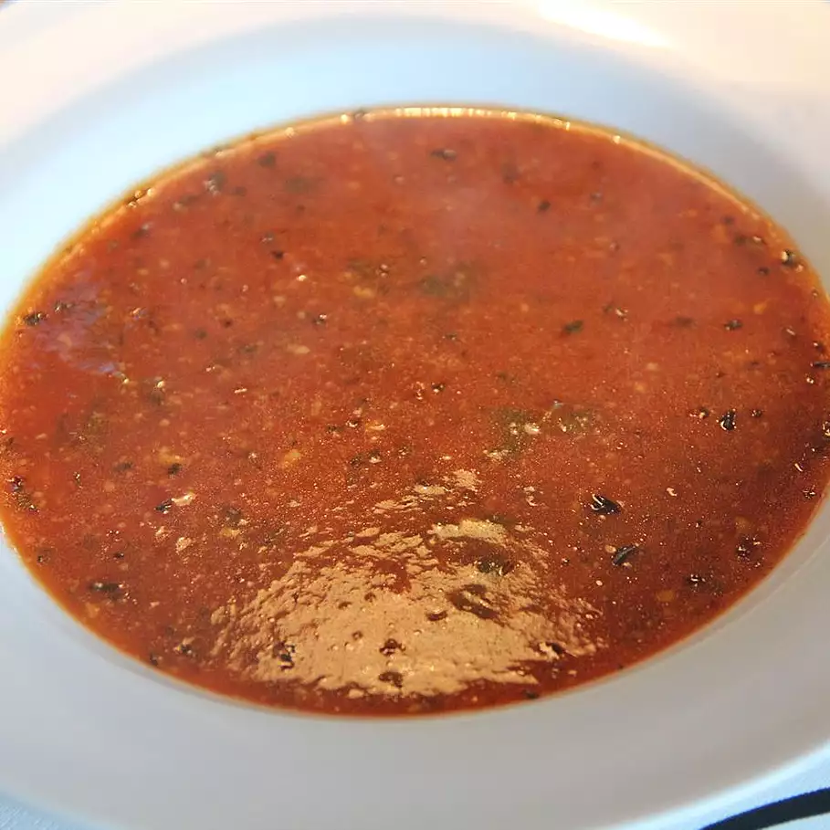

Beautiful Creamy TomatoSoup
Pictured below, a bowl of the creamiest soup
<
Tomato soup is a soup with tomatoes as the primary ingredient. It can be served hot or cold, and may be made in a variety of ways. It may be smooth in texture, and there are also recipes that include chunks of tomato, cream, chicken or vegetable stock, vermicelli, chunks of other vegetables and meatballs. Tomato soup.
Ingredients, and where to find them?
- 2 (28 ounce) cans of whole peeled tomatoes
- 5 cups of chicken broth
- 3 cups of shredded sharp cheddar cheese
- 1 (6 ounce) can of tomato paste
- 1 teaspoon of dried parsley, dried basil leaves and dried tarragon
- salt and pepper to taste
Now then, where do we begin?
Step 3. In a blender or food processor, puree tomatoes with liquid until smooth. Pour into a medium saucepan over medium-low heat. Stir in broth, cheese and tomato paste. Season with parsley, basil, tarragon, thyme, salt and pepper. Simmer 30 minutes, stirring frequently, until cheese is melted and smooth and flavors are well blended.